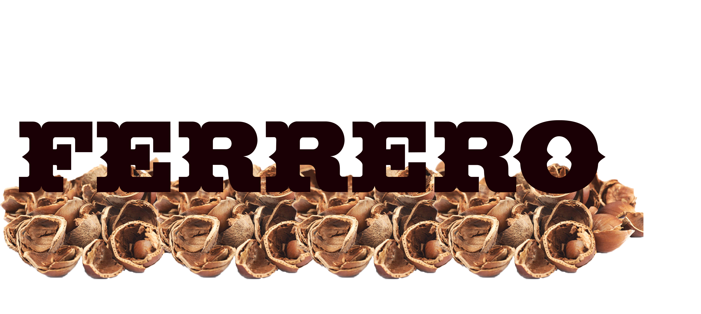

# Cos'è l' Economia Circolare
L’economia circolare è un modello di produzione e consumo che implica condivisione, prestito,
riutilizzo, riparazione, ricondizionamento e riciclo dei materiali e prodotti esistenti il più a
lungo possibile.
In questo modo si estende il ciclo di vita dei prodotti, contribuendo a ridurre i danni al minimo.
Una volta che il prodotto ha terminato la sua funzione, i materiali di cui è composto vengono
infatti reintrodotti, laddove possibile con il riciclo. Così si possono continuamente riutilizzare
all’interno del ciclo produttivo generando ulteriore valore.
I Benefici:
I benefici della economia circolare sono; ridurre la dipendenza dalle materie prime, incremento
della occupazione dato che offre innumerevoli posti da lavoro, ma soprattutto proteggere l’ambiente;
Il riutilizzo e il riciclaggio dei prodotti rallenterebbe l'uso delle risorse naturali, ridurrebbe
la distruzione del paesaggio e degli habitat e contribuirebbe a limitare la perdita di biodiversità.
Un altro vantaggio dell'economia circolare è la riduzione delle emissioni annuali totali di gas a
effetto serra. Secondo l'Agenzia europea dell'ambiente, i processi industriali e l'uso dei prodotti
sono responsabili del 9,10% delle emissioni di gas serra nell'UE, mentre la gestione dei rifiuti
rappresenta il 3,32%.
Creare prodotti più efficienti e sostenibili fin dall'inizio aiuterebbe a ridurre il consumo di
energia e risorse, poiché si stima che oltre l'80% dell'impatto ambientale di un prodotto sia
determinato durante la fase di progettazione.
Il passaggio a prodotti più affidabili che possono essere riutilizzati, aggiornati e riparati
ridurrebbe la quantità di rifiuti. L'imballaggio è un problema in crescita e, in media, ogni europeo
genera quasi 180 kg di rifiuti all’anno. L'obiettivo è contrastare gli imballaggi eccessivi e
migliorarne il design per promuovere il riutilizzo e il riciclaggio.
# Eccellenza Made In Italy
-
L’Italia è una nazione ricca di tradizioni artigianali e culturali.
- Alimentari e Gastronomia: Piatti come pizza, gelato, pasta, caffè salumi e formaggi che sono riconosciuti in tutto il mondo.
- Moda e design: L’Italia è rinominata per i suoi marchi di moda di lusso come: Gucci, Prada, Versace e Dolce e Gabbana. Milano è considerata una delle capitali della moda.
- Arte e cultura: L’Italia è la culla del rinascimento e ha un ricco patrimonio artistico con opere d’arte di Leonardo Da Vinci, Michelangelo e molti altri.
Ogni regione italiana ha le sue specialità uniche e le sue eccellenze.
Molti prodotti italiani vengono esportati all’estero e i settori in cui la produzione italiana eccelle includono: macchinari, moda, alimentare, edilizia e arredamento. Nel tempo i prodotti fatti a mano hanno adottato processi produttivi industriali, ma non hanno mai perso di vista il controllo preciso e l'attenzione che viene posta nella realizzazione di ogni prodotto. Creatività, stile, qualità delle materie prime e innovazione caratterizzano l'eccellenza italiana sul mercato.
Principali settori di eccellenze made in italy:

# Aziende innovative di economia circolare:

-
Le principali aziende, in Italia, a utilizzare un modello di economia principale sono:
- La Rigoni di Asiago; da anni investe in sostenibilità, oltre il 70% dei consumi energetici è prodotto da un impianto di co-generazione a metano, questo impianto riduce le emissioni di Co2 poiché produce energia per lo più termica ed elettrica. Oltre a ciò, anche la loro sede logistica in provincia di Verona è dotata di un impianto fotovoltaico.
- La Ferrero; Adoperano il progetto di Ecopaper, il cui obbiettivo è quello di usare gusci di nocciole e bucce di fave di cacao per produrre imballaggi più economici ed ecologici. Applicando questa tecnologia è possibile pensare di riutilizzare il 50% dei rifiuti dei prodotti dolciari, creando fra le 750mila e 1milione e mezzo di tonnellate di carta ogni anno.
- La Granarolo; l’azienda ha messo in atto un piano importante sul consumo della plastica, che consiste nel suo utilizzo riducendo la grammatura. Oltre a ciò, sta utilizzando materiali riciclabili, di conseguenza più sostenibili e vuole utilizzarli per il packaging di alcuni prodotti come vasetti di yogurt. Ma la riduzione di plastica non è tutto quello che sta facendo, sta monitorando anche gli indicatori ambientali e il benessere degli animali negli allevamenti delle 600 aziende socie. In molte stalle le deiezioni animali stanno già diventando utili per la produzione di energia.
# Dal Latte al Tessuto
-
COME SI PRODUCE TESSUTO DAL LATTE
- Estrazione della caseina: la caseina viene estratta dal latte attraverso un processo chimico. Il latte viene riscaldato per separare la caseina dal resto del liquido.
- Formazione del filato: Una volta ottenuta la caseina pura, questa viene trasformata in filamenti o fibre attraverso un processo di filatura. Questi filamenti possono poi essere tessuti per creare il tessuto.
- Settaggio e intrecciatura: I filamenti di caseina vengono setacciati e intrecciati per creare il tessuto. Questo processo è simile a quello utilizzato nella produzione di tessuti tradizionali.
- Finitura: Il tessuto può essere trattato per renderlo più morbido o resistente all’usura, a seconda delle esigenze. Il tessuto di latte ha suscitato interesse come alternativa sostenibile ai tessuti tradizionali. È biodegradabile e può essere prodotto utilizzando il siero di latte avanzato dalla produzione di latticini, riducendo così gli sprechi.
Il tessuto prodotto dal latte è noto come “Tessuto di latte” o “ QMilch”.
Questo tessuto è realizzato utilizzando le caseine, delle proteine del latte. Viene prodotto così:
Tuttavia, è importante notare che il processo di produzione del tessuto di latte richiede una serie di trattamenti chimici e non è privo di criticità ambientali. Pertanto, sebbene sia una possibile alternativa sostenibile, è importante valutare attentamente l’impatto complessivo prima di adottare questi tessuti su larga scala.
# Scarti dell' Industria
Gli scarti di produzione sono i pezzi (lavorati o semilavorati) che vengono prodotti ma eliminati
perché non conformi alla qualità attesa dal mercato. Per capirci, gli scarti non vengono conteggiati
tra i “pezzi buoni” del processo produttivo.
Gli scarti si possono ottenere dalla produzione di quasi tutte le tipologie di industria, come nelle
industrie vestiarie o metallurgiche, ma anche alimentari.
Dagli scarti alimentari si può ottenere:
Fertilizzanti, tramite compostaggio o, nella produzione e nella lavorazione industriale dei mangimi,
ma anche la realizzazione di vari tipe di farine a seconda dello scarto.
Dagli scarti metallurgiche;
Vengono nuovamente fusi gli scarti, come metallo, acciaio, ecc..., per la realizzazione di oggetti
con lo stesso materiale o addirittura fondere il materiale con altri materiali per ottenere altre
leghe.
Dagli scarti vestiari, invece;
La destinazione principale riguarda il pezzame industriale e le imbottiture. Al secondo posto si
trova la sfilacciatura, che costituisce l'attività alla base per la rigenerazione dei cenci.

# Prodotti realizzati da materiale di scarto
- Rifò
Rifò è una startup nata nell’ottobre 2017 a Prato, dove si trova uno dei distretti tessili più
importanti al mondo, che rigenera fibre tessili nobili come il cashmere attraverso una filiera
artigianale e locale. Gli scarti tessili vengono stracciati, riconvertiti in fibre di lana e
trasformati
in filati, per poi essere confezionati in accessori, cappelli, guanti e sciarpe. Tutto questo
avviene
riducendo al minimo ogni
impatto ambientale, dall’uso dell’acqua a quello dell’energia. Evitando l’uso di coloranti nel
processo di produzione, il lavaggio rimane l’unica fase in cui si utilizza l’acqua.
L’azienda
lavora
senza incorrere nell’errore della sovrapproduzione.
- Aquafil
Fili per tappeti, abbigliamento e bikini vengono realizzati con caprolattame rigenerato grazie
all’«Econyl Regeneration System».
Si tratta
dell’innovativo sistema industriale realizzato da Aquafil nel 2011 per la produzione di nylon 6
Econyl a partire dai rifiuti di nylon derivante dal riciclo di vari rifiuti, tra cui le reti da
pesca dismesse, il fluff dei tappeti e di altre tessiture.
- Orange Fiber
Brevetta e produce tessuti sostenibili per la moda da sottoprodotti della spremitura delle
arance. Ha sviluppato un processo in grado di
trasformare la cellulosa del bianco e della buccia in una fibra simile alla seta. L’azienda realizza
tessuti di alta qualità come raso e popeline – ottenuti tessendo il filato con seta comasca e
cotone – e un twill 100% Orange Fiber.